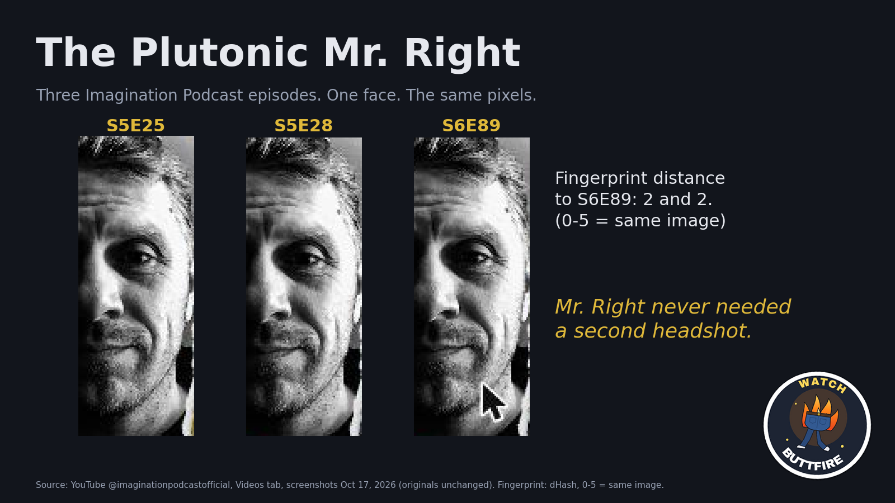
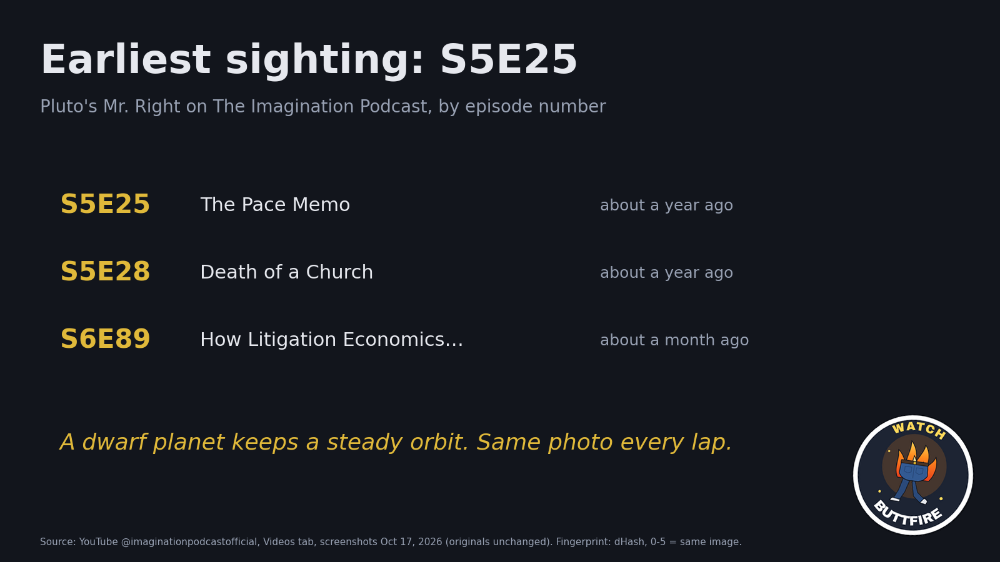
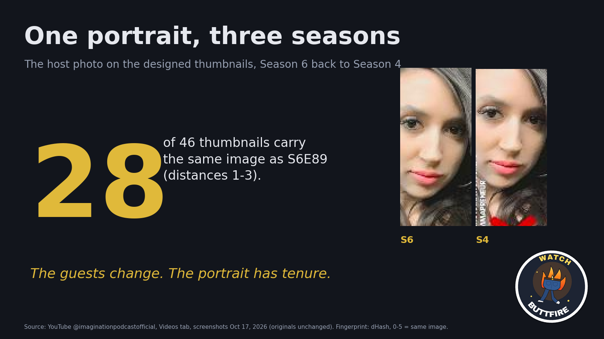
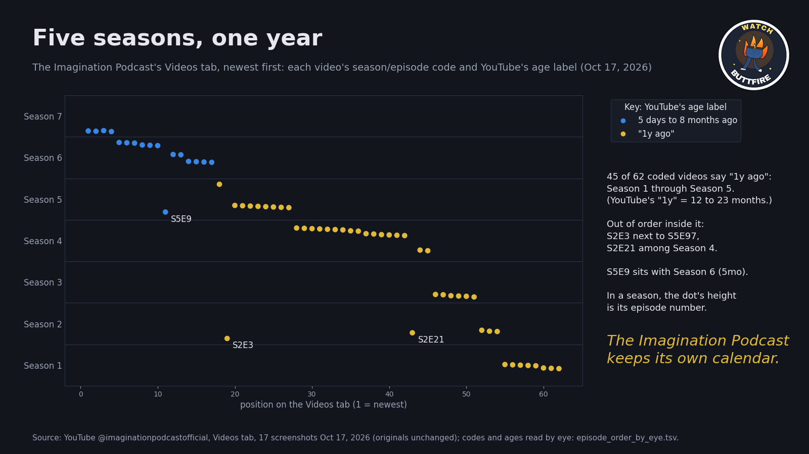
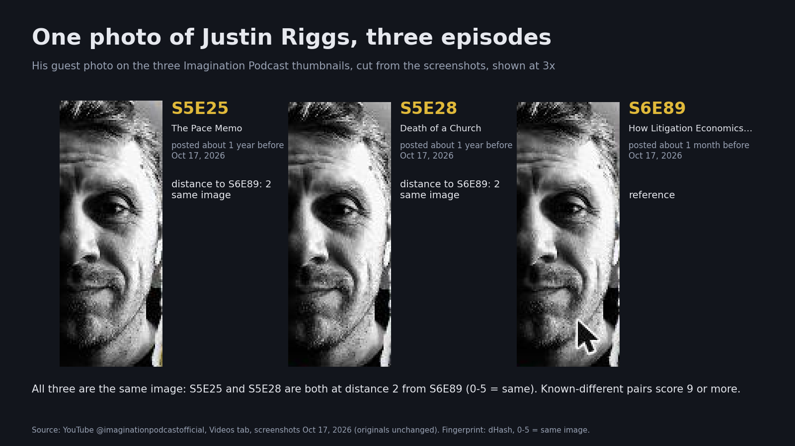
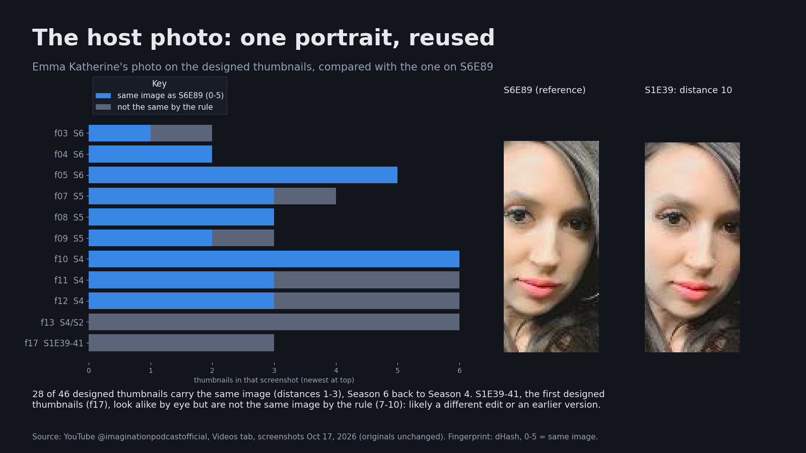
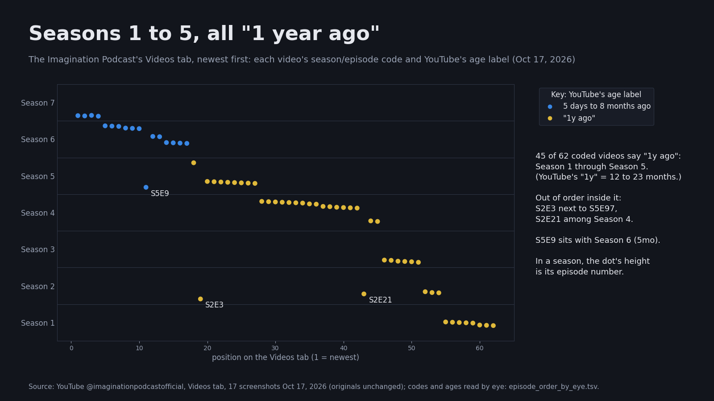

Justin Riggs (@ldsabuse), Mr. Right of the Chad System's dwarf planet, on The Imagination Podcast: three episodes, one headshot. Plus a host portrait with tenure, and five seasons that all landed "1 year ago".




| episode | title, as listed | posted (YouTube, Oct 17, 2026) | views | length |
|---|---|---|---|---|
| S5E25 | The Pace Memo: Ritual Abuse Coverup in the LDS Church and CIA Connections | 1y ago | 7.6K | 1:50:20 |
| S5E28 | Death of a Church: Greed, Gluttony, and Grift in LDS, Inc. | 1y ago | 4K | 2:31:33 |
| S6E89 | How Litigation Economics Turns Children of God into Adversaries of the Church | 1mo ago | 3.5K | 2:29:02 |
Each thumbnail credits him as the guest, with his ldsabuse handles. YouTube shows only "1y ago" and "1mo ago"; the exact upload dates were not fetched.
His guest photo on all three thumbnails is the same image: S5E25 and S5E28 are both at fingerprint distance 2 from S6E89. Fingerprint here is dHash, 64 bits; 0–5 counts as the same image, and pairs we know are different score 9 or more.

Emma Katherine's photo on the designed thumbnails: 28 of 46 are the same image as on S6E89 (distances 1–3), from Season 6 back to Season 4. The first designed thumbnails, S1E39–41, look alike by eye but are not the same image by the rule (7–10). The early seasons' video-call thumbnails are live stills, a different picture each time.

On the Videos tab, 45 of the 62 videos whose title carries a season/episode code say "1y ago": Season 1 through Season 5, with episode numbers into the 90s, in one age bucket (YouTube's "1y" covers 12 to 23 months). Inside it they are out of order: S2E3 next to S5E97, S2E21 among Season 4, and S5E9 among Season 6 at "5mo". Only Seasons 6 and 7 spread out in time. Exact upload dates would show whether the back catalogue went up in a batch; we have not fetched them.

Red: the host photo. Yellow: Riggs. Cyan: the season/episode badge. Magenta: the season/episode code in the title. The boxes are drawn on copies; the published screenshots are the original pixels.
The channel's Videos tab was scrolled from the newest upload to Season 1 and screenshotted: 18 screenshots, kept unchanged. The published screenshots are exact-pixel cuts of the video grid (the browser's sidebar left out); the originals' sha256 are listed with them. Whole thumbnails were found automatically; the guest and host photo boxes were measured on one thumbnail and applied to all, then checked by eye. Each crop is the exact pixels inside a box. The fingerprint is dHash; because the fixed boxes cut the photos at slightly different offsets, the cards use a small alignment search, and the plain fixed-box table is published too.